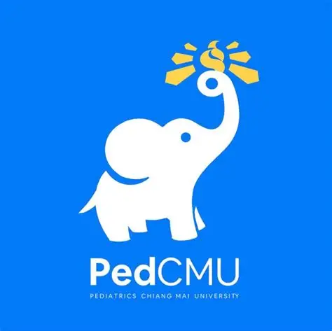
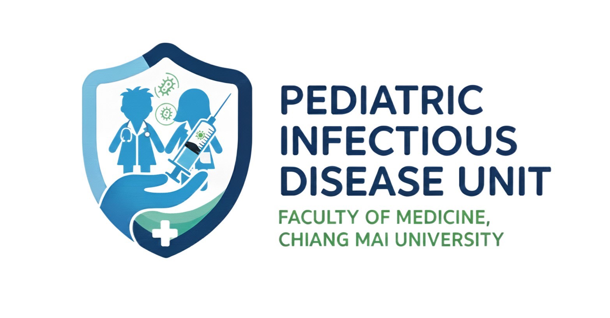

eClinicalMedicine, Volume 80, 2025
Impact factor: 9.600 (Q1, JCR)
SCImago: 18.90 (Q1)
Journal of the International AIDS Society, Volume 28, 2025
Impact factor: 4.600; Q1 (JCR)
SCImago: 8.60; Q1
World Journal of Clinical Pediatrics, Volume 14, 2025
SCImago: 3.20 (Q2)
Journal of the International AIDS Society, Volume 28, 2025
Impact factor: 4.600; Q1 (JDA)
SCImago: 8.60 (Q1)
Lancet HIV, e774-e788, 2025
Impact factor: 12.800; Q1 (JCR)
SCImago: 19.90 (Q1)
HIV Medicine, 26:140-152, 2025
Impact factor: 2.800; Q2 (JCR)
SCImago: 5.10 (Q1)
International Journal of Infectious Diseases, 161, 2025
Impact factor: 4.800; Q1 (JCR)
SCImago: 18.90 (Q1)
Vaccines, Volume 12, 2024
Impact factor: 7.800 (Q1, JCR)
SCImago: 7.00 (Q1)
AIDS Care - Psychological and Socio-Medical Aspects of AIDS/HIV,36:964-973, 2024
Impact factor: 1.700 (Q3, JCR)
SCImago: 3.50 (Q2)
Annals of Hematology, 103:3963-3971, 2024
Impact factor: 3.500 (Q2, JCR)
SCImago: 5.50 (Q1)
Clinics in Perinatology, 51:911-923, 2024
Impact factor: 2.100 (Q3, JCR)
SCImago: 4.20 (Q2)
Clinics in Perinatology, 51:911-923, 2024
Impact factor: 2.100 (Q3, JCR)
SCImago: 4.20 (Q2)
AIDS,38:2073-2085, 2024
Impact factor: 3.800 (Q3, JCR)
SCImago: 6.30 (Q1)
Journal of Adolescent Health, 73:262-270, 2023
Impact factor: 7.898 (Q1, JCR)
SCImago: 7.10 (Q1)
Journal of the International AIDS Society,Volume 26., 2023
Impact factor: 6.707 (Q1, JCR)
SCImago: 6.90 (Q1)
Journal of preventive medicine and public health = Yebang Uihakhoe chi.,56:212-220, 2023
SCImago: 3.90 (Q2)
Vaccine: X.,Volume 14., 2023
SCImago: 3.90 (Q1)
Vaccine: X.,Volume 11., 2023
Impact factor:
SCImago: 4.50 (Q1)
Scientific Reports.,Volume 13., 2023
Impact factor: 4.997 (Q2)
SCImago: 6.90 (Q1)
AIDS Care - Psychological and Socio-Medical Aspects of AIDS/HIV.,35:1928-1937., 2023
Impact factor: 1.887 (Q3)
SCImago: 3.50 (Q1)
Journal of Infection and Public Health.,16:1659-1665., 2023
Impact factor: 7.537 (Q1)
SCImago: 8.00 (Q1)
Journal of Infection and Public Health., 41:5834-5840., 2023
Impact factor: 4.169 (Q3)
SCImago: 6.70 (Q1)
Antiviral Therapy., 28., 2023
Impact factor: 1.679 (Q4)
SCImago: 5.10 (Q2)
IJID Regions.,8:49-57, 2023
Journal of Infection and Public Health.16:1418-1426., 2023
Impact factor: 7.537 (Q1)
SCImago: 8.00 (Q1)
AIDS Care - Psychological and Socio-Medical Aspects of AIDS/HIV. 35:818-823., 2023
Impact factor: 1.887 (Q3)
SCImago: 3.50 (Q1)
AIDS Care - Psychological and Socio-Medical Aspects of AIDS/HIV. 35:406-410., 2023
Impact factor: 1.887 (Q3)
SCImago: 3.50 (Q1)
Vaccine: X. 18, 2024
Impact factor: 1.887 (Q3,JDA)
SCImago: 3.80 (Q1)
PLoS neglected tropical diseases. 16, 2022
Impact factor: 4.411 (Q1,JCR)
SCImago: 7.10 (Q1)
PLoS ONE. 18, 2023
Impact factor: 3.752 (Q1,JCR)
SCImago: 5.60 (Q1)
Pediatric emergency care.38:E1569-E1573, 2022
Impact factor: 1.454 (Q3, JCR)
SCImago: 1.80 (Q2)
Journal of the Pediatric Infectious Diseases Society. 11:9-15., 2022
Impact factor: 3.164 (Q1, JCR)
SCImago: 4.80 (Q1)
Heliyon.Volume 8., 2022
SCImago: 2.10 (Q1)
American Journal of Infection Control.50:105-107., 2022
Impact factor: 2.918 (Q2, JCR)
SCImago: 4.20 (Q1)
International Journal of Infectious Diseases.122:603-608., 2022
Impact factor: 3.623 (Q2, JCR)
SCImago: 7.00 (Q1)
Journal of acquired immune deficiency syndromes (1999).90:193-200., 2022
Impact factor: 3.731 (Q2, JCR)
SCImago: 5.90 (Q1)
The Pediatric infectious disease journal. 41:E208-E215., 2022
Impact factor: 2.129 (Q3, JCR)
SCImago: 4.20 (Q1)
IJID Regions. 5:79-85. , 2022
Journal of the International AIDS Society.Volume 24, 2021
Impact factor: 5.553 (Q1, JCR)
SCImago: 7.10 (Q1)
Clinical Infectious Diseases. 73:1555-1564., 2021
Impact factor: 8.313 (Q1, JCR)
SCImago: 12.50 (Q1)
Journal of the International AIDS Society.Volume 24., 2021
Impact factor: 5.553 (Q1, JCR)
SCImago: 7.10 (Q1)
AIDS.34:1527-1537., 2020
Impact factor: 4.499 (Q1, JCR)
SCImago: 7.10 (Q1)
Journal of the International AIDS Society.Volume 23., 2020
Impact factor: 5.192 (Q1, JCR)
SCImago: 6.70 (Q1)
PLoS ONE.Volume 15., 2020
Impact factor: 2.776 (Q2, JCR)
SCImago: 5.40 (Q1)
Scientific Reports.Volume 13., 2023
Impact factor: 4.997 (Q2, JCR)
SCImago: 6.90 (Q1)
Pediatric Infectious Disease Journal.38:287-292., 2019
Impact factor: 2.305 (Q2, JCR)
SCImago: 4.70 (Q1)
Jaids-Journal of Acquired Immune Deficiency Syndromes. 82:431-438., 2019
Impact factor: 4.116 (Q1, JCR)
SCImago: 6.90 (Q1)
Jaids-Journal of Acquired Immune Deficiency Syndromes. 80:308-315., 2019
Impact factor: 4.116 (Q1, JCR)
SCImago: 6.90 (Q1)
Journal of the International AIDS Society. Volume22., 2019
Impact factor: 5.135 (Q1, JCR)
SCImago: 5.50 (Q1)
PLoS ONE. Volume14., 2019
Impact factor: 2.766 (Q1, JCR)
SCImago: 5.70 (Q1)
Journal of Adolescent Health.65:651-659., 2019
Impact factor: 4.098 (Q1, JCR)
SCImago: 7.50 (Q1)
AIDS.32:1689-1697., 2018
Impact factor: 5.019 (Q1, JCR)
Jaids-Journal of Acquired Immune Deficiency Syndromes.32:1689-1697., 2018
Impact factor: 3.935 (Q1, JCR)
Jaids-Journal of Acquired Immune Deficiency Syndromes.78:S40-S48., 2018
Impact factor: 3.935 (Q1, JCR)
Antiviral Therapy.22:471-479., 2017
Impact factor: 2.916 (Q2, JCR)
Journal of Adolescent Health.61:91-98., 2017
Impact factor: 3.838 (Q1, JCR)
Journal of the Pediatric Infectious Diseases Society.6:173-177. , 2017